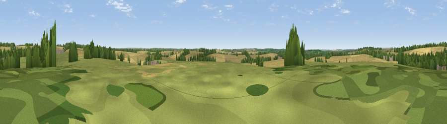

Hunton Down
#38139 in England · top 75% of its area beats it · near Micheldever StationThe view, rendered

A 360° render of this exact spot computed from the terrain model, tree cover and land cover — summer colours, afternoon light, calibrated against photographs of famous viewpoints. Real trees, hedges and buildings will differ in detail.
The panorama
Grey silhouette: terrain skyline in each direction (720 bearings, Earth curvature and refraction included). Dashed green: skyline with trees (+15 m) and buildings (+8 m) as obstacles. Blue strip: how far the ground is visible on each bearing.
Where the view opens
Wedge length = distance to the farthest visible ground on that bearing (vegetation-aware). Rings at 10, 25 and 50 km.
What fills the view
62% cropland · 23% grassland · 14% woodland ·
Angular shares of the visible panorama (visual magnitude), not map area. Landscape diversity 0.41 (0–1 Shannon).
Key numbers
More beautiful places nearby
The staircase of upgrades: each row has a higher view potential than everything closer. Driving times are estimates from straight-line distance, calibrated against real road routing — check an actual route before setting out.
| Place | Direction | Drive | Score |
|---|---|---|---|
| Weston Down | ENE · 3 km | ~7 min | 34.9 |
| Tidbury Rings | WNW · 3 km | ~7 min | 47.0 |
| Viewpoint near Crawley | SW · 10 km | ~20 min | 50.9 |
| Viewpoint near Stockbridge | WSW · 12 km | ~23 min | 63.3 |
| Viewpoint near Stockbridge | WSW · 13 km | ~24 min | 64.3 |
| Watership Down | N · 15 km | ~27 min | 71.4 |
| Beacon Hill | N · 16 km | ~28 min | 76.7 |
| Viewpoint near Buriton | SE · 31 km | ~49 min | 80.0 |
51.17263, -1.30358 · source: osm peak · position refined by local search. Computed location — check access rights before visiting.